A · B2B / B2G
BÁN GIẢI PHÁP
ĐÀO TẠO & MÔ PHỎNG NHIỆM VỤ
TRẢI NGHIỆM 3D TRÊN WEB CHO CÔNG CỘNG / DI SẢN
3D HỖ TRỢ VẬN HÀNH — CHỈ THEO BÀI TOÁN CỤ THỂ
Trong giai đoạn tới, Savrse vận hành hai hướng song song: B2B/B2G bán giải pháp cụ thể cho tổ chức và B2C kiểm chứng một game VR trả phí có khả năng chơi lại.
Có người mua, procurement, pricing và một số tín hiệu repeat/renewal trong nhiều nhóm giải pháp gần với năng lực Savrse.
Chưa đủ xác nhận trực tiếp từ khách hàng/người dùng mục tiêu; chưa biết SAVA có lợi thế đủ mạnh để thắng và có economics hấp dẫn hay không.
Customer validation: INSUFFICIENT. E3: NOT ACHIEVED. SAVA Right-to-Win: 0/25 — NOT PROVEN — nghĩa là chưa chứng minh, không phải “SAVA không thể thắng”. SAVA economics: UNKNOWN / INSUFFICIENT. Formal geography priority: UNRESOLVED.
Các hình dưới đây là sản phẩm tham chiếu để CEO hình dung class sản phẩm; không phải sản phẩm Savrse.
SAVA xây phần mềm/trải nghiệm mô phỏng giúp trường học, cơ quan hoặc tổ chức chuyên môn đào tạo con người thực hiện một nhiệm vụ cụ thể.
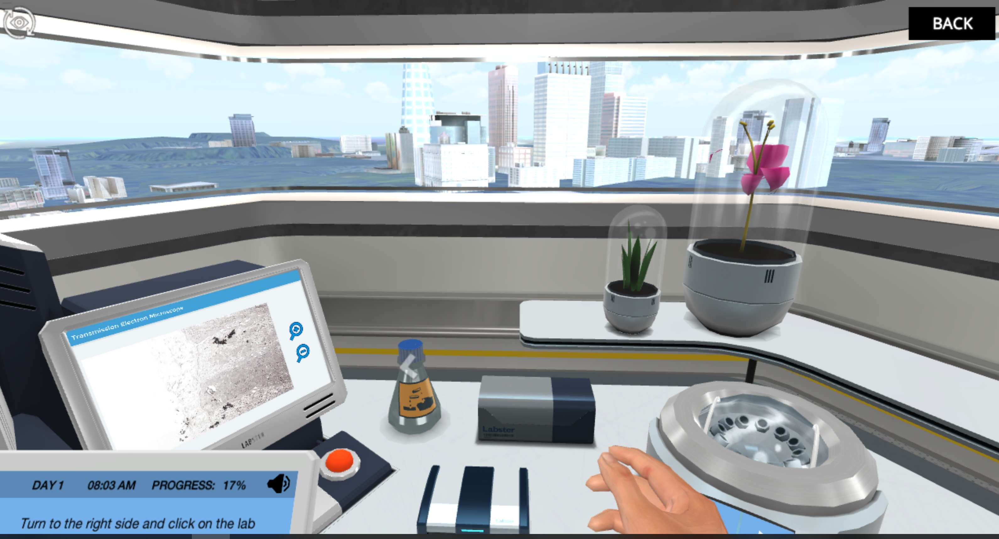
REFERENCE / BENCHMARK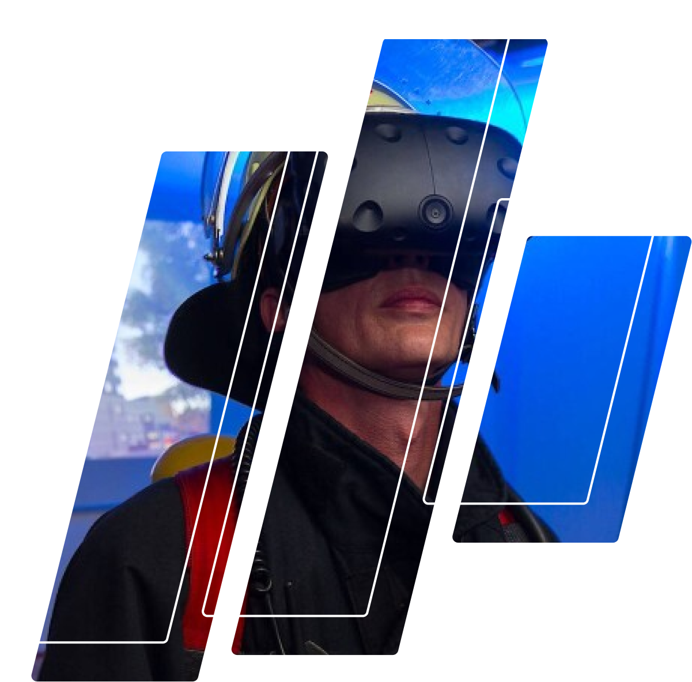
REFERENCE / BENCHMARKTổ chức đặt hàng và trả tiền cho trải nghiệm 3D chạy trên web; công chúng hoặc du khách là người sử dụng cuối.
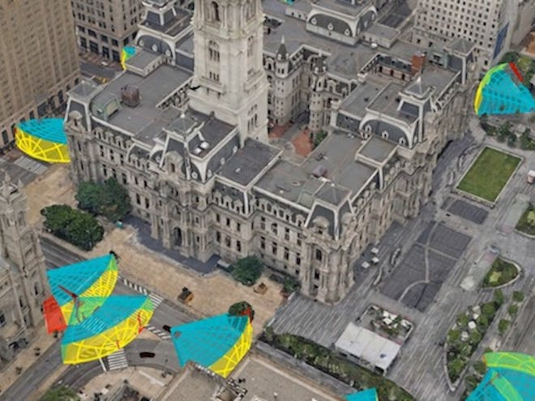
REFERENCE / BENCHMARKKhông xây một digital-twin platform mới. Chỉ làm lớp giao diện/ứng dụng 3D phục vụ một bài toán vận hành cụ thể trên hệ thống dữ liệu khách hàng đã có.
Phải cạnh tranh với platform lớn, cần network effect và đầu tư dài hạn trước khi có bằng chứng mua đủ mạnh.
Formal detail: incumbent + network burden.Muốn thành công phải đồng thời có người chơi, creator, moderation và vận hành cộng đồng liên tục.
Formal detail: multi-sided ecosystem burden.Có thể dùng như công cụ hỗ trợ sản xuất, nhưng chưa có bằng chứng đủ mạnh để biến thành business độc lập.
Formal detail: commoditization pressure.Ba hình dưới đây chỉ minh họa rằng premium VR game là sản phẩm consumer độc lập với trải nghiệm chơi cụ thể. Không phải benchmark cơ chế cho Kinetic.
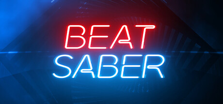
REFERENCE / BENCHMARK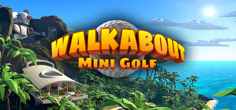
REFERENCE / BENCHMARK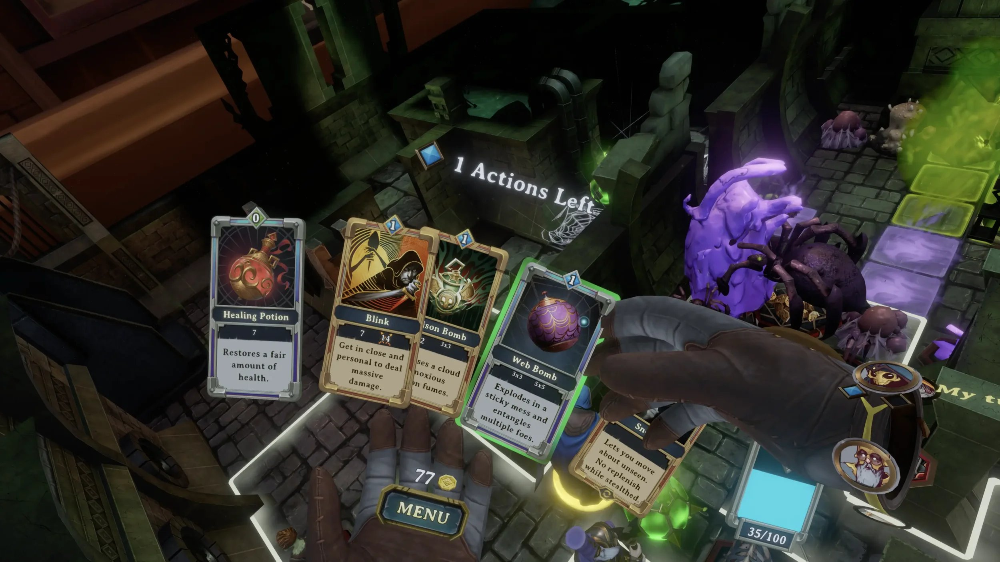
REFERENCE / BENCHMARKCó thể khóa phạm vi prototype và dừng nhanh.
Cho phép tạo product/payment evidence riêng.
Thấy người chơi có tự muốn thử lại và giỏi dần lên hay không.
Solo-first nên không phụ thuộc cộng đồng đủ lớn ở ngày đầu.
Không mở thêm bài toán UGC/moderation.
Giảm live-ops và content treadmill ở giai đoạn kiểm chứng.
Bạn đứng trong một nhà máy tự động đang chạy liên tục và dùng hai tay trong VR để chuyển các kiện hàng tới đúng máy trước khi dây chuyền bị rối hoặc quá tải.
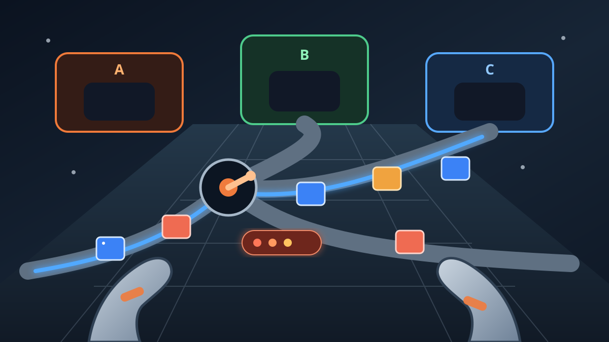
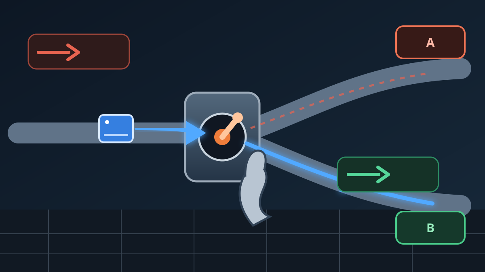
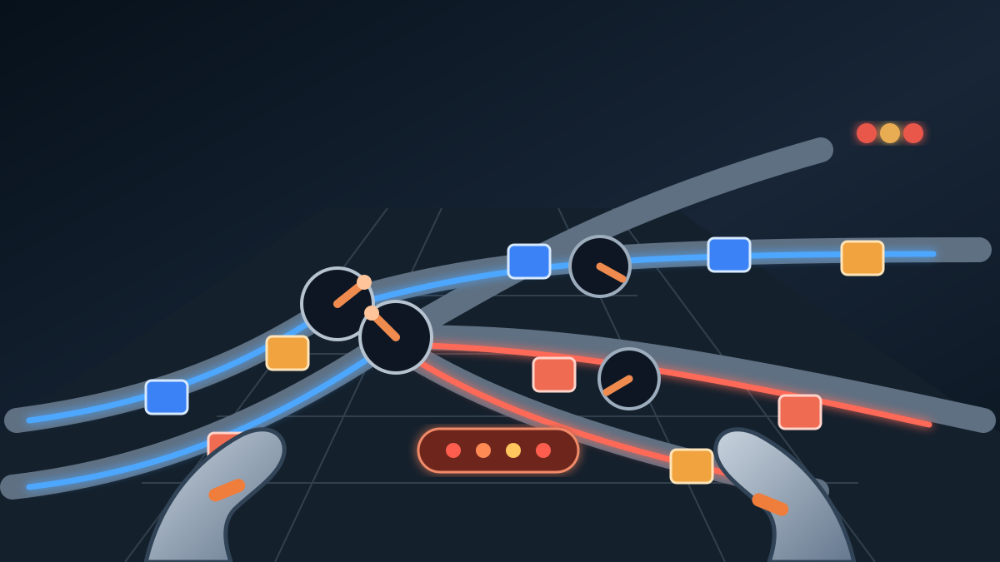
Nếu không can thiệp, kiện hàng đi sai. Người chơi phải nhìn trước và đổi tuyến đúng lúc.
Vươn tay · nắm · xoay · gạt switch · định tuyến trong không gian.
Cùng logic nhưng dùng mouse/controller.
Formal research layer: WHY‑VR = MEDIUM–HIGH hypothesis; replay = HIGH hypothesis; prototype feasibility = HIGH hypothesis. Chưa chứng minh PMF, willingness-to-pay, retention, commercial success hoặc factory theme preference. Prototype dùng để kiểm tra các điểm này — không phải cam kết full production.
Dùng hai tay để đổi tuyến cho các luồng vật thể khi trạng thái liên tục thay đổi và có nguy cơ tắc.
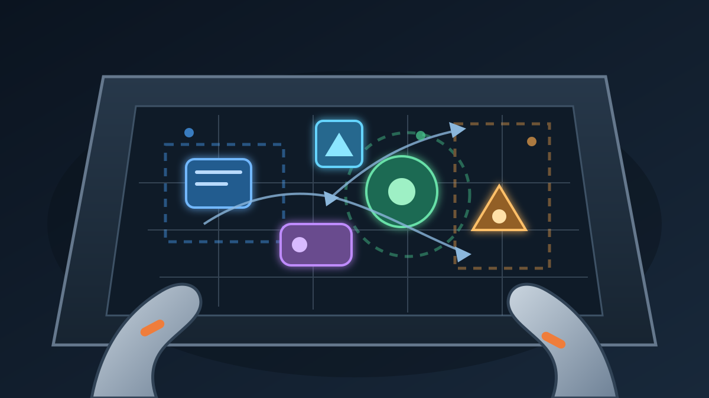
Người chơi thao tác trong một không gian nhỏ để sắp xếp/định vị vật thể khi nhiều điều kiện cùng cạnh tranh; có nhiều lời giải hợp lệ.
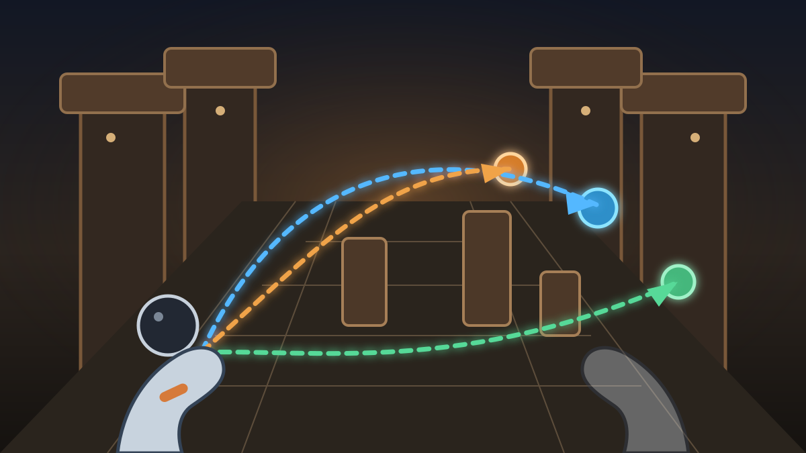
Người chơi đọc quỹ đạo và vật cản, chọn đường ném, thực hiện và nhận phản hồi ngay để chỉnh ở lần sau.
| Tiêu chí CEO | Kinetic | Flow | Trajectory |
|---|---|---|---|
| Game dễ hiểu? | HIGH | HIGH | HIGH |
| VR tạo giá trị? | MEDIUM–HIGH | MEDIUM–HIGH | HIGH |
| Lý do chơi lại? | HIGH | MEDIUM–HIGH | HIGH |
| Prototype nhỏ? | CAO — giả thuyết | CAO — giả thuyết | CAO — giả thuyết |
| Rủi ro chính | Flat có thể thay VR; cảm giác như công việc; fairness/legibility. | Cảm giác như công việc; flat có thể thay; premium value. | Direct demand yếu; độ tin cậy/công bằng của cú ném. |
| Ưu tiên | #1 | #2 | #3 |
Đây là thứ tự ưu tiên prototype sau challenge pass, không phải dự báo doanh thu. B2C evidence coverage: 200 initial unique usable sources + 386 new unique sources = 586 combined unique external sources. Direct decision source map: 44 sources — 20 supporting, 12 counter-evidence, 9 benchmark/prior-art, 3 multi-role. Source-role count không phải lá phiếu.
Bài test quan trọng nhất: làm gameplay tương đương ở VR và màn hình thường. Nếu màn hình thường vui/hiệu quả tương đương hoặc tốt hơn, lý do tồn tại của bản VR suy yếu.
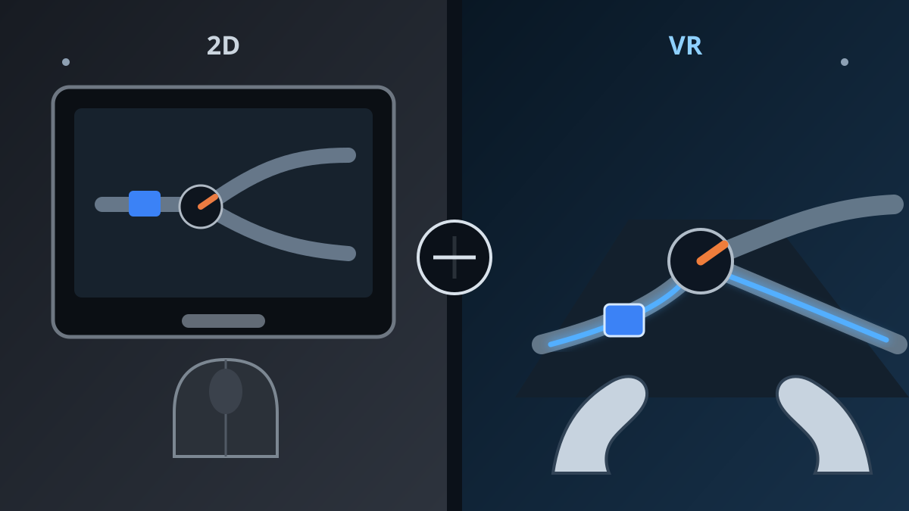
Hiện chưa có đủ bằng chứng để đầu tư lại, nhưng cũng chưa đủ cơ sở để kết luận phải kill.
Formal assessment: 60 / confidence MEDIUM. D7 remains NOT CLOSED. PAUSE không được chuyển thành KILL hoặc RESTART.
D6 = UNRESOLVED. D8 = NOT AUTHORIZED. D10 = NOT AUTHORIZED. D11 = HOLD / NOT AUTHORIZED. Gate 7 = BLOCKED; Gate 8 = BLOCKED / CONDITIONAL.
Customer validation insufficient; E3 not achieved; SAVA RTW not proven; economics unknown/insufficient; Kinetic full production not authorized.
Các con số nguồn là coverage/traceability, không phải phiếu bầu và không tự tạo recommendation.